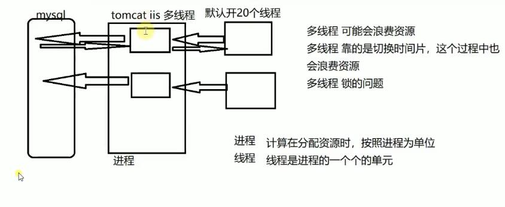
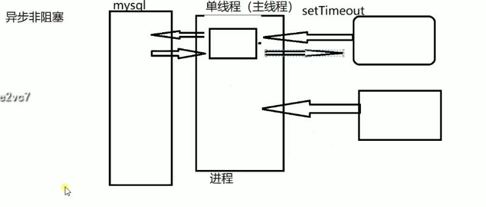
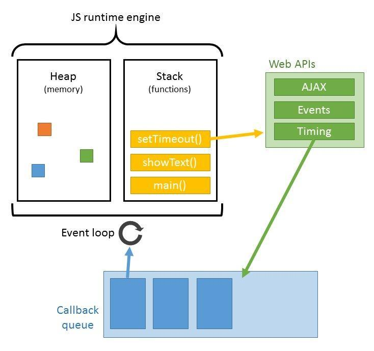
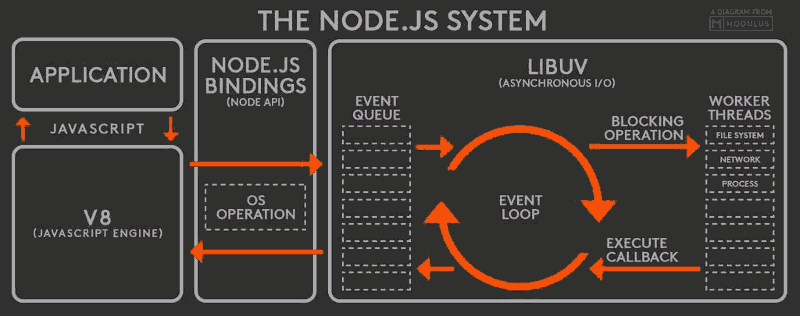
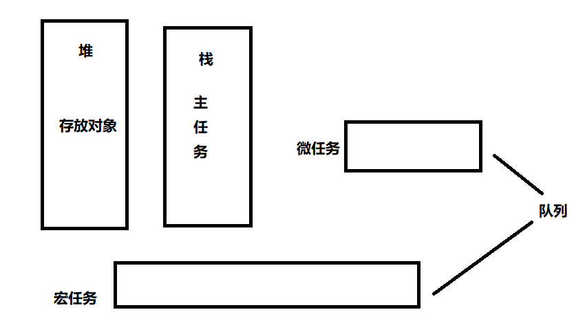
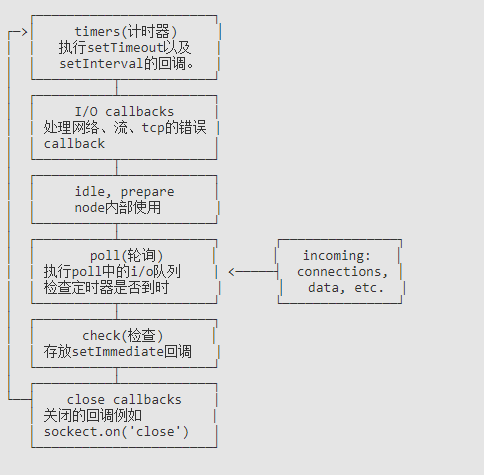

node概念
node工作原理
- 非
node多线程服务器工作原理
 - node
主线程工作原理

Node 解决了什么
Node 的首要目标是提供一种简单的，用于创建高性能服务器的开发工具 Web 服务器的瓶颈在于并发的用户量，对比 Java 和 Php 的实现方式
Node在处理高并发，I/O 密集场景有明显的性能优势
高并发,是指在同一时间并发访问服务器I/O 密集指的是文件操作、网络操作、数据库,相对的有 CPU 密集,CPU 密集指的是逻辑处理运算、压缩、解压、加密、解密
Web 主要场景就是接收客户端的请求读取静态资源和渲染界面,所以 Node 非常适合 Web 应用的开发。
线程
进程是操作系统分配资源和调度任务的基本单位，线程是建立在进程上的一次程序运行单位，一个进程上可以有多个线程。
js线程、ui线程这两个线程是互斥的,目的就是为了保证不产生冲突ui线程会把更改放到队列中，当js线程空闲下来，ui线程在继续渲染
webworker 多线程
- 他和js主线程不是平级的，主线程可以控制
webworker,webworker不能操作dom,document,window1
2
3
4
5
6
7
8
9
10
11
12
13
14
15<!-- 文件1 -->
onmessage=function(e){
let sum=0;
for(let i=0;i<e.data;i++){
sum+=i;
}
postMessage(sum)
}
<!-- 页面主线程 -->
let worker=new Worker('./worker.js')
//把内容发给 工作线程，工作线程可以把结果丢回来
worker.postMessage(100)
worker.onmessage=function(e){
console.log(e.data)
}
global
- 在浏览器端 全局作用域我们通过
window访问 - 我们可以直接在
node中访问global1
2
3
4
5
6
7// 在浏览器端
var a=1;
window.a//1
// 在服务器端
var a=1;
global.a//undefined
原因：node在执行的时候,为了实现模块增加了一个闭包
控制台
在Node.js中，使用
console对象代表控制台(在操作系统中表现为一个操作系统指定的字符界面，比如Window中的命令提示窗口)。
1 | // 标准输出 |
当我们执行以下语句时,1.log文件中仅仅只有标准输出
1 | node node1.js> 1.log |
只有我们执行以下语句时,才能将错误输出添加到1.log中。标准输出用1表示,错误输出用2表示
1 | node node1.js > 1.log 2>&1 |
默认有些属性是隐藏的
1 | console.dir(Array.prototype)//[] |
time和timeEnd中的内容是一对,名字相同时才能打印出两端时间的间隔
1 | console.time('label') |
断言
断言有错误抛出一个AssertionError- 单元测试
mocha,kamra - 断言库
chai,TDD,BDD,DDD持续继承,测试覆盖率 - node 提供一个模块
asset1
console.assert((1+1)===2,'error')
其他属性
process进程argv后续执行时可能会传递参数http-server --port 3000pid进程id 端口占用的情况 任务管理器lsof -i :8080,kill -9 id号chdirchange directory 工作目录cwdcurrent working directory 当前工作目录nextTick微任务- stdout: [Getter],
- stderr: [Getter],
- stdin: [Getter],
Buffer存储文件内容 二进制setImmediate设置立即- setInterval
- setTimeout
process.cwd与_dirname的区别
process.cwd表示当前工作目录,就是代码执行目录__dirname这个属性不是global上的，指代的是当前文件所在的文件夹,不会更改
Event Loop详解
要探究Event Loop，就要先明白两个概念
JS是单线程的
JavaScript语言最大特点就是单线程，但是这里的单线程指的是主线程是单线程的。
那为什么js要单线程呢？
因为，JS主要用于操作DOM，如果是有两个线程，一个在DOM上添加内容，一个在DOM上删除内容，此时浏览器该以哪个为准呢？
所以为了避免复杂性，JavaScript从诞生起就是单线程的。
同步和异步 && 阻塞非阻塞
- 阻塞和非阻塞指的是
调用者的状态 - 同步和异步指的是
被调用者是如何通知的
堆、栈、队列
堆（heap）是指程序运行时申请的动态内存，在JS运行时用来存放对象。栈（stack）遵循的原则是“先进后出”，JS中的基本数据类型与指向对象的地址存放在栈内存中，此外还有一块栈内存用来执行JS主线程–执行栈（execution context stack），此文章中的栈只考虑执行栈。我们可以通过console.trace()查看栈的执行顺序队列（queue）遵循的原则是“先进先出”，JS中除了主线程之外还存在一个“任务队列”（其实有两个，后面再详细说明）。
任务队列
因为JavaScript是单线程的。就意味着所有任务都需要排队，前一个任务结束，后一个任务才能执行。前一个任务耗时很长，后一个任务也得一直等着。但是IO设备（比如ajax网络请求）很慢，CPU一直初一显得状态，这样就很不合理了。
所以，其实主线程完全可以不管IO设备，挂起处于等待中的任务，先运行排在后面的任务。等到IO设备返回了结果，再回过头，把挂起的任务继续执行下去。于是有了同步任务和异步任务。
同步任务是指在
主线程上执行的任务，只有前一个任务执行完毕，下一个任务才能执行。 异步任务是指不进入主线程，而是进入任务队列（task queue）的任务，只有主线程任务执行完毕，任务队列的任务才会进入主线程执行。
浏览器中 Event Loop

- 主线程运行的时候产生堆（heap）和栈（stack）
- 栈中的代码调用各种外部API，它们在
"任务队列"中加入各种事件（click，load，done） - 只要栈中的代码执行完毕，主线程就会去读取
"任务队列"，将队列中的事件放到执行栈中依次执行。 - 主线程继续执行，当再调用外部API时又加入到任务队列中，等主线程执行完毕又会接着将任务队列中的事件放到主线程中。
- 上面整个过程是循环不断的。
node 中的 Event Loop
node是
异步、非阻塞i/o的，是用libuv(通过多线程和阻塞的i/o)实现的。

- 我们写的js代码会交给
v8引擎进行处理 - 代码中可能会调用
nodeApi,node会交给libuv库处理 - libuv通过
阻塞i/o和多线程实现了异步io - 通过
事件驱动的方式,将结果放到事件队列中,最终交给我们的应用。
除了setTimeout和setInterval这两个方法，Node.js还提供了另外两个与”任务队列”有关的方法：process.nextTick和setImmediate。
微任务 && 宏任务（队列）
- 微任务 process.nextTick,
- 原生 Promise (有些实现的promise 将 then 方法放到了宏任务中，浏览器默认放到了微任务),
- Object.observe (已废弃),
- MutationObserver（不兼容）
MessageChannel（vue中nextClick实现原理）
1 | <!-- MutationObserver的用法 --> |
1 | //管道的消息流动 |
- 宏任务
setTimeout、setInterval、setImmediate、I/o
执行顺序
- 在
浏览器中，先执行当前栈，执行完走微任务，然后走事件队列里的内容,拿出一个放到当前栈中执行,再去执行微任务

-在Node环境中，Event Loop 分为 6 个阶段，每一个阶段对应着一个宏任务队列。
 timers:这个是定时器阶段，处理setTimeout()和setInterval()的回调函数。进入这个阶段后，主线程会检查一下当前时间，是否满足定时器的条件。如果满足就执行回调函数，否则就离开这个阶段。I/O callbacks除了以下操作的回调函数，其他的回调函数都在这个阶段执行。- setTimeout()和setInterval()的回调函数
- setImmediate()的回调函数
- 用于关闭请求的回调函数，比如socket.on(‘close’, …)
idle, prepare该阶段只供libuv内部调用，这里可以忽略。Poll:- 这个阶段是轮询时间，用于等待还未返回的 I/O 事件，比如服务器的回应、用户移动鼠标等等。
- 这个阶段的时间会比较长。如果没有其他异步任务要处理（比如到期的定时器），会一直停留在这个阶段，等待 I/O 请求返回结果。
check:该阶段执行setImmediate()的回调函数。close callbacks:该阶段执行关闭请求的回调函数，比如socket.on(‘close’, …)。
栗子
事件循环的示例
猜猜以执行步奏
1 | const fs = require('fs'); |
脚本进入第一轮事件循环以后，没有到期的定时器，也没有已经可以执行的 I/O 回调函数，所以会进入 Poll 阶段，等待内核返回文件读取的结果。由于读取小文件一般不会超过 100ms，所以在定时器到期之前，Poll 阶段就会得到结果，因此就会继续往下执行。
第二轮事件循环，依然没有到期的定时器，但是已经有了可以执行的 I/O 回调函数，所以会进入 I/O callbacks 阶段，执行
fs.readFile的回调函数。这个回调函数需要 200ms，也就是说，在它执行到一半的时候，100ms 的定时器就会到期。但是，必须等到这个回调函数执行完，才会离开这个阶段。第三轮事件循环，已经有了到期的定时器，所以会在 timers 阶段执行定时器。最后输出结果大概是200多毫秒
setTimeout 和 setImmediate
由于setTimeout在timers 阶段执行，而setImmediate在 check阶段执行。所以，setTimeout会早于setImmediate完成。
1 | setTimeout(() => console.log(1)); |
- 上面代码应该先输出
1，再输出2，但是实际执行的时候，结果却是不确定，有时还会先输出2，再输出1。 - 这是因为
setTimeout的第二个参数默认为0。但是实际上，Node做不到0毫秒，最少也需要1毫秒，根据官方文档，第二个参数的取值范围在1毫秒到2147483647毫秒之间。也就是说，setTimeout(f, 0)等同于setTimeout(f, 1)。 - 实际执行的时候，进入事件循环以后，有可能到了
1毫秒，也可能还没到1毫秒，取决于系统当时的状况。如果没到1毫秒，那么timers阶段就会跳过，进入check阶段，先执行setImmediate的回调函数。
但是下面的代码一定是先输出2，再输出1。
1 | const fs = require('fs'); |
promise.nextTick的用途
1 | function Fn(){ |
nextTick不要写递归,可以放一些比settimeout优先执行的任务
1 | //机器会卡死 |
注意:
- 当触发回调函数时，才会将回调函数放到队列中,例如
setTimeout只有在时间到的情况下才会将回调函数，放入队列中 settimeout在不写时间或者时间为0的时候,因为浏览器工作原理,默认4msprocess.nextTick比then快